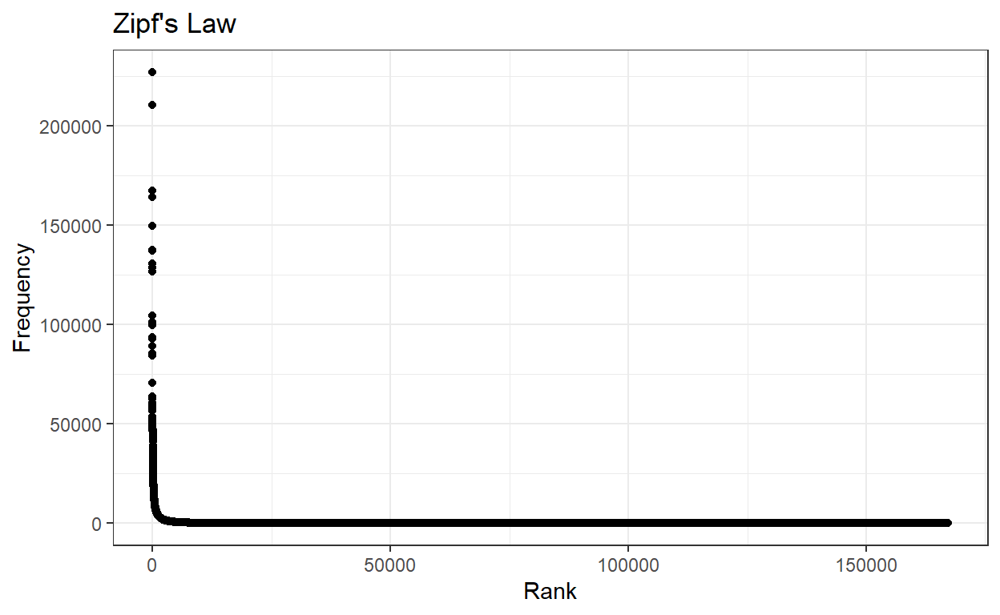
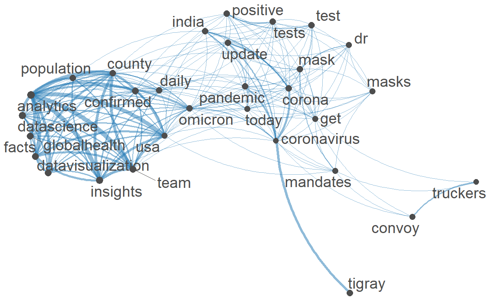
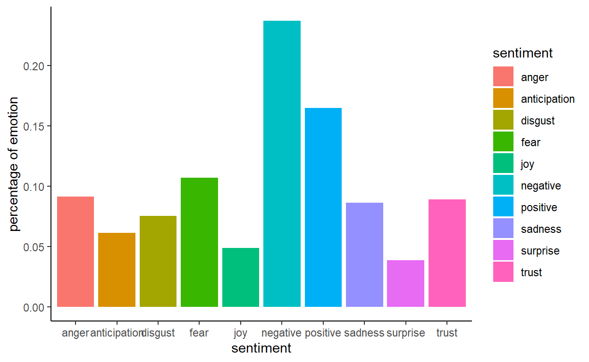

Sentiment Analysis.
skim(twitter_data)
| Name | twitter_data |
| Number of rows | 2140951 |
| Number of columns | 5 |
| _______________________ | |
| Column type frequency: | |
| character | 3 |
| numeric | 1 |
| POSIXct | 1 |
| ________________________ | |
| Group variables | None |
Variable type: character
| skim_variable | n_missing | complete_rate | min | max | empty | n_unique | whitespace |
|---|---|---|---|---|---|---|---|
| user_name | 173 | 1.00 | 1 | 400 | 0 | 600604 | 0 |
| text | 3028 | 1.00 | 1 | 295 | 0 | 570851 | 0 |
| user_location | 722541 | 0.66 | 1 | 692 | 0 | 128828 | 0 |
Variable type: numeric
| skim_variable | n_missing | complete_rate | mean | sd | p0 | p25 | p50 | p75 | p100 | hist |
|---|---|---|---|---|---|---|---|---|---|---|
| tweet_id | 0 | 1 | 1.489498e+18 | 4.495719e+15 | 1.483113e+18 | 1.485359e+18 | 1.489598e+18 | 1.493456e+18 | 1.498086e+18 | ▇▃▅▅▃ |
Variable type: POSIXct
| skim_variable | n_missing | complete_rate | min | max | median | n_unique |
|---|---|---|---|---|---|---|
| created_at | 0 | 1 | 2022-01-17 16:24:12 | 2022-02-27 23:59:59 | 2022-02-04 13:54:15 | 1479653 |
twitter_data$text[1:10]
[1] "the dashboard has been updated on january new cases and deaths in days of"
[2] "health canada has authorized the first treatment in pill form that can be used at home to help prevent ser"
[3] "vaccine year of vaccination my gettr"
[4] "hey unvaccinated people what your excuse now even sheep are doing it"
[5] "every single pediatrician know was first in line to immunize their children against that should tell you somethin"
[6] "children from kupwara kashmir sang song as tribute to indian army on army day this shows indianarmy has succe"
[7] "only states and c report vaccination data by race ethnicity for kids including states and c who report this da"
[8] "did you know covax has delivered one in ten vaccines worldwide find out more about the partnership in this"
[9] "billion doses of vaccines have been delivered to countries across the incl via global vaccine platform"
[10] "being an adult means making hard decisions like canceling trip to rochester to go see your favorite bands your bff because rates are raging adultingblows"clean <- function (text) {
str_remove_all(text," ?(f|ht)(tp)(s?)(://)(.*)[.|/](.*)") %>%
# Remove mentions
str_remove_all("@[[:alnum:]_]*") %>%
# Remove hash tags
str_remove_all("#[[:alnum:]_]+") %>%
# Replace "&" character reference with "and"
str_replace_all("&", "and") %>%
# Remove punctuation, using a standard character class
str_remove_all("[[:punct:]]") %>%
# remove digits
str_remove_all("[[:digit:]]") %>%
# Remove "RT: " from beginning of retweets
str_remove_all("^RT:? ") %>%
# Replace any newline characters with a space
str_replace_all("\\\n|\\\r", " ") %>%
# remove strings like "<U+0001F9F5>"
str_remove_all("<.*?>") %>%
# Make everything lowercase
str_to_lower() %>%
# Remove any trailing white space around the text and inside a string
str_squish()
}
twitter_data$text <- clean(twitter_data$text)
looking at the cleaned tweets
twitter_data$text[1:10]
[1] "the dashboard has been updated on january new cases and deaths in days of"
[2] "health canada has authorized the first treatment in pill form that can be used at home to help prevent ser"
[3] "vaccine year of vaccination my gettr"
[4] "hey unvaccinated people what your excuse now even sheep are doing it"
[5] "every single pediatrician know was first in line to immunize their children against that should tell you somethin"
[6] "children from kupwara kashmir sang song as tribute to indian army on army day this shows indianarmy has succe"
[7] "only states and c report vaccination data by race ethnicity for kids including states and c who report this da"
[8] "did you know covax has delivered one in ten vaccines worldwide find out more about the partnership in this"
[9] "billion doses of vaccines have been delivered to countries across the incl via global vaccine platform"
[10] "being an adult means making hard decisions like canceling trip to rochester to go see your favorite bands your bff because rates are raging adultingblows"converting the character vectors, text,
retweet_text to a single corpus
text <- corpus(c(twitter_data$text, twitter_data$retweet_text))
text <- dfm(tokens(text, remove_punct=TRUE, remove_numbers = TRUE) %>%
tokens_select(pattern=stopwords("en"),
selection="remove"))
finding the word frequencies in the documents/ tweets
word_counts <- as.data.frame(sort(colSums(text),dec=T))
colnames(word_counts) <- c("Frequency")
word_counts$word <- row.names(word_counts)
word_counts$Rank <- c(1:ncol(text))
head(word_counts)
Frequency word Rank
cases 226946 cases 1
new 210197 new 2
people 167343 people 3
vaccine 163866 vaccine 4
coronavirus 149677 coronavirus 5
omicron 137526 omicron 6counting the words that have frequency leass than 50
sum(word_counts$Frequency < 50)
[1] 147378looking at how word frequencies are distributed
ggplot(word_counts, mapping = aes(x = Rank, y = Frequency)) +
geom_point() +
labs(title = "Zipf's Law", x = "Rank", y = "Frequency") +
theme_bw()

Having seen what we are working with here, we might start to think that our matrix still contains too many uninformative or very rare terms. We can trim our DFM in two different ways related to feature frequencies using dfm_trim().
# let's create a nicer dfm by limiting to words that appear frequently and are in more than 30% of tweets
#text_dfm <- dfm_trim(text, min_termfreq = 50)
text_dfm <- dfm_trim(text, min_termfreq = .3, docfreq_type = "prop")
# create fcm from dfm
text_fcm <- fcm(text_dfm)
# check the dimensions (i.e., the number of rows and the number of columnns)
# of the matrix we created
dim(text_fcm)
[1] 167217 167217head(text_fcm, 10)
Feature co-occurrence matrix of: 10 by 167,217 features.
features
features dashboard updated january new cases deaths days
dashboard 203 1882 827 1685 3729 2815 1465
updated 0 113 858 2210 3851 2951 1932
january 0 0 517 5480 8149 4382 1103
new 0 0 0 32037 130482 50268 6670
cases 0 0 0 0 57566 78553 8452
deaths 0 0 0 0 0 17171 6134
days 0 0 0 0 0 0 1980
health 0 0 0 0 0 0 0
canada 0 0 0 0 0 0 0
authorized 0 0 0 0 0 0 0
features
features health canada authorized
dashboard 175 5 0
updated 723 210 6
january 1022 361 3
new 8960 1547 44
cases 17538 1535 7
deaths 12210 1478 6
days 1378 725 6
health 10015 4900 330
canada 0 6017 358
authorized 0 0 6
[ reached max_nfeat ... 167,207 more features ]# pull the top features
myFeatures <- names(topfeatures(text_fcm, 30))
# retain only those top features as part of our matrix
even_text_fcm <- fcm_select(text_fcm, pattern = myFeatures, selection = "keep")
# check dimensions
dim(even_text_fcm)
[1] 30 30# compute size weight for vertices in network
size <- log(colSums(even_text_fcm))
# create plot
textplot_network(even_text_fcm, vertex_size = size / max(size) * 3)

The function get_sentiments() allows us to get specific sentiment lexicons with the appropriate measures for each one. This is a function in tidytext package
This dataset nrc was published in Saif M. Mohammad and Peter Turney. (2013), ``Crowdsourcing a Word-Emotion Association Lexicon.’’ Computational Intelligence, 29(3): 436-465.
nrc <- get_sentiments("nrc")
this dataset afinn was published by Finn Årup Nielsen (http://www2.imm.dtu.dk/pubdb/views/publication_details.php?id=6010)
afinn <- get_sentiments("afinn")
this dataset bing was published by Bing Liu and collaborators,https://www.cs.uic.edu/~liub/FBS/sentiment-analysis.html
bing <- get_sentiments("bing")
sentiment analysis
The nrc lexicon categorizes words in a binary fashion (“yes”/“no”) into categories of positive, negative, anger, anticipation, disgust, fear, joy, sadness, surprise, and trust.
(nrc <- word_counts %>%
inner_join(nrc, by = "word") %>%
group_by(sentiment) %>%
summarise(frequency = n()))
# A tibble: 10 x 2
sentiment frequency
<chr> <int>
1 anger 1182
2 anticipation 794
3 disgust 975
4 fear 1385
5 joy 632
6 negative 3062
7 positive 2133
8 sadness 1116
9 surprise 500
10 trust 1152 ggplot(nrc, aes(x = sentiment, y = frequency/sum(frequency), fill = sentiment))+
geom_bar(stat='identity')+
labs(y = "percentage of emotion")+
theme_classic()

The bing lexicon categorizes words in a binary fashion into positive and negative categories.
word_counts %>%
inner_join(bing, by = "word") %>%
group_by(sentiment) %>%
summarise(frequency = n())
# A tibble: 2 x 2
sentiment frequency
<chr> <int>
1 negative 3599
2 positive 1538The AFINN lexicon assigns words with a score that runs between -5 and 5, with negative scores indicating negative sentiment and positive scores indicating positive sentiment.
word_counts %>%
inner_join(afinn, by = "word") %>%
group_by(value) %>%
summarise(frequency = n()) %>%
arrange(desc(frequency))
# A tibble: 10 x 2
value frequency
<dbl> <int>
1 -2 874
2 2 414
3 -1 293
4 -3 238
5 1 204
6 3 153
7 -4 39
8 4 38
9 -5 15
10 5 5most common positive and negative words
head(bing_word_counts <- word_counts %>%
inner_join(get_sentiments("bing")) %>%
select(word, Frequency, sentiment), 30)
word Frequency sentiment
1 virus 58719 negative
2 positive 57913 positive
3 like 50880 positive
4 death 46987 negative
5 free 45752 positive
6 work 36684 positive
7 died 36610 negative
8 risk 35625 negative
9 breaking 33144 negative
10 safe 32545 positive
11 well 30308 positive
12 freedom 30232 positive
13 protect 28426 positive
14 good 28288 positive
15 infection 28176 negative
16 benefits 27731 positive
17 symptoms 26354 negative
18 saint 23853 positive
19 great 23668 positive
20 support 23439 positive
21 right 21834 positive
22 enough 20903 positive
23 protection 20267 positive
24 lost 19854 negative
25 crisis 18816 negative
26 better 18022 positive
27 best 17348 positive
28 infections 17135 negative
29 available 17007 positive
30 recovery 15911 positivehead(nrc_word_counts <- word_counts %>%
inner_join(get_sentiments("nrc")) %>%
filter(sentiment %in% c("positve", "negative")) %>%
select(word, Frequency, sentiment), 30)
word Frequency sentiment
1 pandemic 126603 negative
2 virus 58719 negative
3 government 47388 negative
4 death 46987 negative
5 risk 35625 negative
6 infection 28176 negative
7 war 27816 negative
8 case 26888 negative
9 wear 23451 negative
10 fight 23145 negative
11 disease 20578 negative
12 lost 19854 negative
13 crisis 18816 negative
14 locust 17224 negative
15 sick 14344 negative
16 highest 13871 negative
17 emergency 13376 negative
18 shot 13027 negative
19 flu 12825 negative
20 mortality 12423 negative
21 cancer 11628 negative
22 infectious 11395 negative
23 dangerous 10701 negative
24 isolation 10482 negative
25 threat 9943 negative
26 deadly 9376 negative
27 die 9129 negative
28 excess 8287 negative
29 leave 8214 negative
30 fear 7937 negative